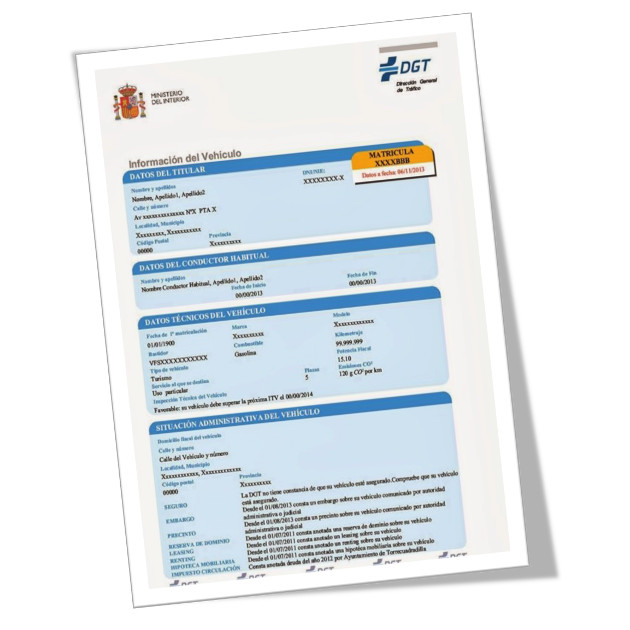

INFORMES DE VEHÍCULOS

¿Vas a comprar un vehículo? ¡Infórmate antes con nuestro Informe de Vehículos!
Antes de comprar un vehículo, ya sea nuevo o usado, es fundamental que conozcas su historial...
En Gestoría Hellín te ofrecemos acceso a los diferentes tipos de Informes de Vehículos de la DGT...
¿Qué información incluye un Informe de Vehículos?
Dependiendo del tipo de informe que solicites, podrás obtener información sobre:
- Datos técnicos del vehículo (marca, modelo, cilindrada, potencia, etc.).
- Historial de ITV y kilometraje.
- Titularidad y número de propietarios anteriores.
- Cargas o gravámenes (embargos, precintos, reserva de dominio...).
- Siniestros totales o accidentes graves en su historial.
- Situación administrativa (impuestos, ITV en vigor, etc.).
Tipos de Informes de Vehículos:
En Gestoría Hellín te ofrecemos los siguientes tipos de informes:
- Informe reducido: Info básica (fecha de primera matriculación, datos técnicos, incidencias).
- Informe completo: Información administrativa (titular, cargas, historial ITV, kilometraje, etc.).
- Informe de cargas: Si solo te interesa conocer gravámenes o embargos.
¡No te arriesgues a comprar un vehículo con problemas ocultos! Solicita un Informe de Vehículos en Gestoría Hellín y toma una decisión informada.
¿Necesitas ayuda con la documentación de tu vehículo?
¡Contáctanos hoy mismo! En Gestoría Hellín te ayudamos con transferencias, matriculaciones, bajas e informes de vehículos.
Solicitar Información